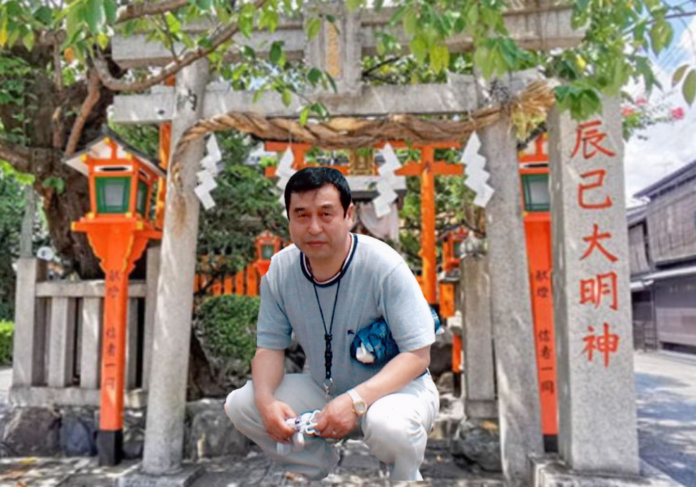
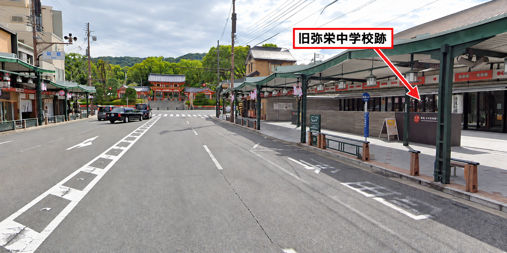

写真を読み込めませんでした。
再読み込みしてご確認ください。
写真を押すと、大きく表示できます。
一篇 ／ 生涯
田中吉彦という男の生涯
京都・祇園に生まれ、優しさと職人魂を貫いた人生
小学校1年生から続いた友情。
大切な親友の歩みを、ここに残します。
第一章
私の人生に、忘れられない親友がいた
吉彦。お前のことを、こうして書き残しておこうと思う。京都市東山区、祇園界隈で育ったお前と私が出会ったのは、小学校1年生のときだった。そこから始まった友情は、長い年月を経ても、途切れることがなかった。
吉彦、お前がいなくなってから、もう8年。今でもふとした瞬間に、お前に話しかけている自分がいる。
私は現在80歳になった。人生を振り返ると、お前の優しさや思いやりが、今も心に残っている。田中吉彦という一人の人が、確かにここに生きていた。そのことを、ご家族や友人、そして次の世代の人たちにも伝えたい。
第二章
祇園で育った少年時代
私たちは京都市立有済小学校で同級生となり、京都市立弥栄中学校へと進んだ。幼い頃に一緒に遊んだ祇園の街は、私にとって、お前との友情が始まった場所でもある。
歴史ある町並み、そして辰巳神社の周辺。あの街を思い浮かべると、子どもだった私たちの時間も、心の中によみがえってくる。年月が過ぎても、幼い頃の思い出は、親友とつながる大切な糸であり続けている。


写真を読み込めませんでした。再読み込みしてご確認ください。
写真を押すと、大きく表示できます。
第三章
家族を大切にした優しい人
お前には、奥様と娘さん、そして一人のお孫さんがいる。家族を大切にする人だった。その優しさと、人を思いやる深い心を、私は今も忘れられない。
長い付き合いの中で、私が何より心にとどめているのは、お前の人柄だ。家族を思い、人を思う。その優しさこそが、お前という人を語るうえで、欠かせないものだと思っている。
第四章
井戸掘り職人としての人生
吉彦、お前は井戸掘りを家業とする家庭に生まれ、高度な技術を持つ井戸掘り職人となった。地中にある水を探り、人々が使える井戸を掘る。その仕事を、お前は担っていた。
水は、飲むときも、食事を作るときも、日々の暮らしを支えている。井戸を掘ることは、その大切な水へと道をつなぐ仕事だ。人々の生活に欠かせない仕事に、お前が技術を役立てていたことを、私はここに記しておきたい。
第五章
日本の伝統技術「上総掘り」でケニアへ
お前は、朝日放送制作のテレビ番組『世界の子供がSOS！THE★仕事人バンク マチャアキJAPAN』に出演し、アフリカ・ケニアの農村で井戸を掘り上げた。そこで用いたのは、日本の伝統的な井戸掘り技術「上総掘り（かずさぼり）」だった。
祇園で一緒に育った親友が、遠いケニアで、人々の暮らしのために自分の技術を役立てた。その仕事を、私は今でも誇らしく思っている。
田中さんの番組出演とケニアでの井戸掘りは、親友から提供された情報に基づいています。正確な放送日や井戸の深さ、作業日数などは、確認資料がないため記載していません。
参考資料を読む
- 文化庁：上総掘りの技術（技術と文化財指定の資料）
- Wikipedia：番組概要（参考情報。田中さんの出演回を裏付ける一次資料ではありません）
番組映像は、権利関係を確認できていないため掲載していません。
吉彦、お前は本当に立派な仕事をしたな。親友として、今でも誇りに思っている。
第六章
田中吉彦という男の優しさ
お前の生涯を振り返ると、職人としての仕事とともに、あの優しさが思い浮かぶ。長い友情を通じて私の心に残ったものを、最後に、この言葉で伝えたい。
私は現在80歳。田中吉彦君ほど、優しさと思いやりを持った人には、今まで出会ったことがありません。